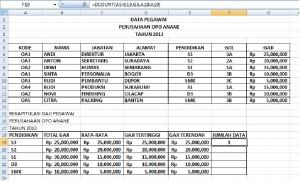
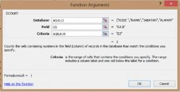
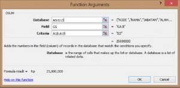
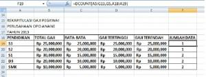
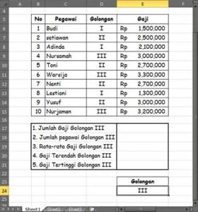
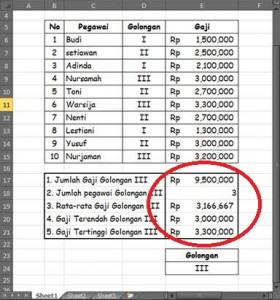

DSUM dan DCOUNT: jumlah dan banyak data dengan kriteria
Fungsi database bekerja pada tabel yang punya baris judul, dan memakai rentang kriteria terpisah yang berisi judul kolom plus syaratnya.
=DSUM(database; field; kriteria) =DCOUNT(database; field; kriteria)
| database | Seluruh tabel termasuk baris judul |
|---|---|
| field | Kolom yang dihitung: nama judulnya dalam tanda kutip, atau nomor kolom |
| kriteria | Rentang dua baris atau lebih: judul kolom di atas, syarat di bawahnya |
Langkah praktik
- Buat rentang kriteria di luar tabel. Baris pertama berisi judul kolom yang persis sama dengan tabel, baris di bawahnya berisi syarat.
- Ketik =DSUM( lalu blok tabel termasuk judul.
- Isi field dengan "Gaji" dan blok rentang kriteria.
- Syarat pada satu baris dihubungkan dengan DAN; syarat pada baris berbeda dihubungkan dengan ATAU.
Tips
DCOUNT hanya menghitung sel berisi angka. Untuk menghitung sel terisi apa pun, pakai DCOUNTA.
Tangkapan layar praktik





